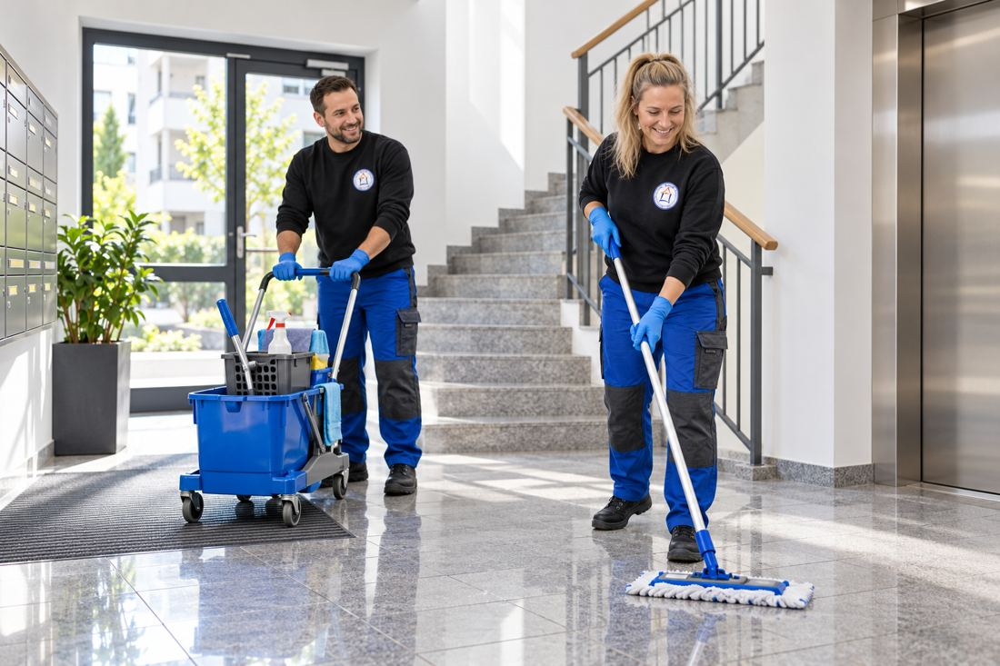

KARRIERE BEI HMZ · MINIJOB
Reinigungskraft (m/w/d) auf Minijob-Basis
Wir suchen Verstärkung für unser Reinigungsteam!
Für die Reinigung unserer betreuten Objekte suchen wir eine zuverlässige und flexible Reinigungskraft auf Minijob-Basis.
Der Einsatz erfolgt in einem kleineren regelmäßigen Stundenumfang und zusätzlich insbesondere als Urlaubs- und Krankheitsvertretung innerhalb unseres Reinigungsteams.

Ihre Aufgaben
- Treppenhausreinigung
- Büro- und Unterhaltsreinigung
- Vertretung bei Urlaub und Krankheit
Die Einsatzorte befinden sich überwiegend in Leegebruch, Velten und der näheren Umgebung.
Das wünschen wir uns
- Zuverlässigkeit und sorgfältiges Arbeiten
- Selbstständige Arbeitsweise
- Zeitliche Flexibilität für Vertretungseinsätze
- Bereitschaft, je nach Objekt auch früh morgens zu beginnen
- Erfahrung in der Reinigung ist von Vorteil, aber keine Voraussetzung
Das bieten wir
- Minijob in einem regionalen und familiären Unternehmen
- Kleiner regelmäßiger Arbeitsumfang
- Zusätzliche Einsätze bei Urlaubs- und Krankheitsvertretung
- Wohnortnahe Einsatzorte
- Gründliche Einarbeitung
- Feste Ansprechpartner und kurze Abstimmungswege
Bitte nennen Sie uns in Ihrer Bewerbung auch Ihre zeitliche Verfügbarkeit.
Interesse?
Dann schick uns einfach eine kurze Bewerbung per E-Mail an
bewerbung@hmz-ohv.de.
Ein ausführliches Anschreiben ist nicht erforderlich. Ein kurzer Lebenslauf reicht zunächst aus.
Anschließend melden wir uns bei dir und vereinbaren einen persönlichen Termin.
Wir freuen uns darauf, dich kennenzulernen.